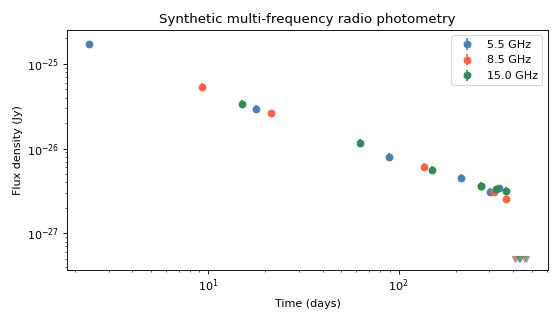

Radio Photometry#
Trilobite provides two containers for radio photometric data:
RadioPhotometryContainer— multi-epoch, multi-frequency radio photometry (the most common case).RadioPhotometryEpoch— single-epoch radio SED, where frequency is the independent variable. See RadioPhotometryEpoch.
Both containers wrap an astropy.table.Table with an enforced schema,
provide unit-aware accessors, and expose a
to_inference_data()
method for direct integration with the inference pipeline.
RadioPhotometryContainer#
RadioPhotometryContainer stores
heterogeneous multi-frequency, multi-epoch radio observations:
where each row represents one measurement at a given time and frequency.
Schema#
The container enforces the following column schema. Columns marked Required must be present; the rest are optional but are recognised and unit-validated when present.
Column |
Type |
Unit |
Required |
Description |
|---|---|---|---|---|
|
float |
|
Yes |
Relative time of the observation (with respect to a user-defined reference). |
|
float |
|
Yes |
Central observing frequency. |
|
float |
|
Yes |
Measured flux density. Set to |
|
float |
|
Yes |
1σ uncertainty on |
|
float |
|
Yes |
Upper limit for non-detections. Set to |
|
float |
|
No |
Total integration time of the observation. |
|
str |
— |
No |
Free-form observation identifier (e.g. telescope + epoch label). |
|
int |
— |
No |
Instrument-specific integer band identifier. |
|
int |
— |
No |
Integer epoch grouping label (see Epoch Support). |
|
str |
— |
No |
Free-form comments or metadata. |
Note
Time is always relative — it is measured with respect to some reference event (explosion time, trigger time, etc.) chosen by the user. The absolute reference time is not stored in the container.
Units must be compatible with the declared units but do not need to match
exactly. For example, freq can be supplied in MHz or Hz and will be
converted automatically.
For non-detections: set flux_density and flux_density_error to
np.nan, and provide the upper limit in flux_upper_limit.
Construction#
From an Astropy Table#
import numpy as np
from astropy.table import Table
from astropy import units as u
from trilobite.data import RadioPhotometryContainer
t = Table({
"time": np.array([1., 5., 10., 20., 50.]) * u.day,
"freq": np.array([5.5, 8.5, 5.5, 8.5, 5.5]) * u.GHz,
"flux_density": np.array([1.2, 1.5, 1.1, 0.9, np.nan]) * u.Jy,
"flux_density_error": np.array([0.1, 0.1, 0.1, 0.1, np.nan]) * u.Jy,
"flux_upper_limit": np.array([np.nan, np.nan, np.nan, np.nan, 0.3]) * u.Jy,
})
c = RadioPhotometryContainer(t)
print(c.n_obs, c.n_detections, c.n_non_detections)
# → 5 4 1
If your table uses different column names, supply a column_map:
c = RadioPhotometryContainer.from_table(t, column_map={
"t_day": "time",
"nu_GHz": "freq",
"flux_Jy": "flux_density",
})
To convert from absolute times (MJD, Unix, etc.) to relative days at load time:
from astropy.time import Time
c = RadioPhotometryContainer.from_table(
t,
internal_time_format="mjd",
time_start=Time(59000.0, format="mjd"),
)
From a File#
Any format supported by astropy.table.Table.read() works:
c = RadioPhotometryContainer.from_file("photometry.fits")
c = RadioPhotometryContainer.from_file("photometry.csv", format="ascii.csv")
Data Access#
All column accessors return astropy.units.Quantity objects in the
units declared in the schema.
c.time # Quantity, units: day
c.freq # Quantity, units: GHz
c.flux_density # Quantity, units: Jy
c.flux_density_error # Quantity, units: Jy
c.flux_upper_limit # Quantity, units: Jy
c.n_obs # int: total row count
c.n_detections # int: rows where flux_upper_limit is NaN
c.n_non_detections # int: rows where flux_upper_limit is finite
Standard table indexing is also supported:
c[0] # first row as a Table row
c[:5] # first five rows (returns a new container)
c["flux_density"] # raw column access
Detection and Non-Detection Masks#
A row is a detection when its flux_upper_limit is NaN.
A row is a non-detection (upper limit) when flux_upper_limit is finite.
c.detection_mask # bool array: True = detection
c.non_detection_mask # bool array: True = upper limit
c.detection_table # sub-table of detections only
c.non_detection_table # sub-table of upper limits only
To extract a subset:
detections = c.apply_mask(c.detection_mask)
non_detections = c.apply_mask(c.non_detection_mask)
first_ten = c.apply_mask(np.arrange(10))
Epoch Support#
Observations may be grouped into epochs — sets of measurements that are simultaneous or near-simultaneous (e.g. a multi-frequency observing block).
Assign epochs manually via the epoch_id column before construction:
t["epoch_id"] = [0, 0, 1, 1, 2] # rows 0–1 in epoch 0, rows 2–3 in epoch 1, etc.
c = RadioPhotometryContainer(t)
Or generate epochs automatically from the data:
# Group observations separated by less than 2 days into the same epoch
c.set_epochs_from_time_gaps(2.0 * u.day)
# Assign explicit epoch IDs by index
c.set_epochs_from_indices([0, 0, 0, 1, 1, 1, 2, 2])
# Bin into fixed-width time windows
bins = np.arrange(0, 200, 10) * u.day
c.set_epochs_from_bins(bins)
Once epochs are set:
c.has_epochs # True
c.n_epochs # number of unique epochs
c.epoch_ids # integer epoch ID per observation
epoch_0 = c.get_epoch(0) # all rows in epoch 0
mask = c.get_epoch_mask(0) # boolean mask for epoch 0
table = c.get_epoch_table(0) # as a Table
Plotting#
fig, axes = c.plot_photometry()
(Source code, png, hires.png, pdf)
{kind=link}
{kind=link}

Inference Integration#
to_inference_data()
converts the container into an InferenceData
object ready for likelihood evaluation.
inference_data = c.to_inference_data(model)
print(inference_data.describe())
Optional parameters:
inference_data = c.to_inference_data(
model,
infer_errors=True, # infer 1σ errors from upper limits
detection_threshold=3.0, # N-sigma assumed for upper limits
mask=c.detection_mask, # restrict to detections only
)
If the model’s variable names don’t match the container’s default column names
(time and freq), supply an explicit mapping:
inference_data = c.to_inference_data(
model,
variables={"frequency": "freq"}, # model name → container column
observables={
"flux_density": (
"flux_density",
"flux_density_error",
"flux_upper_limit",
None, # no lower limits
)
},
)
See From Data to Inference: A Complete Guide for the full step-by-step pipeline guide.
API Reference#
- class trilobite.data.photometry.RadioPhotometryContainer(table: Table)[source]
Bases:
DataContainerImmutable container for radio photometric observations.
This class provides a validated, unit-aware, read-only interface to radio photometry data, typically originating from FITS tables. Internally, the data are stored as an
astropy.table.Table, but access is mediated through a standardized schema that enforces consistent column names, dtypes, and units.The container is designed to serve as a clean boundary object between raw observational data and downstream modeling, inference, and visualization routines. It supports explicit handling of detections versus non-detections (upper limits), optional epoch grouping, and safe conversion to NumPy arrays for numerical backends.
Key features#
- Schema enforcement
Input tables are validated against a predefined schema specifying required and optional columns, expected dtypes, and physical units. Missing or incompatible columns raise informative errors.
- Unit awareness
All physical quantities are exposed as
astropy.units.Quantityobjects. Unitless input columns are automatically assigned expected units (with a warning), while incompatible units raise an exception.
- Detection / non-detection logic
Observations are automatically classified as detections or upper limits based on the presence of
flux_upper_limitvalues, with boolean masks and filtered table views provided.
- Epoch support
Observations may be grouped into epochs via an explicit
epoch_idcolumn or generated dynamically using time gaps or fixed time bins. Epochs are treated as metadata and do not modify the underlying data.
- Immutability
The container does not permit in-place mutation of the underlying table. All table accessors return copies, ensuring reproducibility and preventing accidental side effects during analysis.
- Numerical backend compatibility
The container can be coerced into dense NumPy arrays, either in schema units (via
np.asarray(container)) or explicitly converted to CGS base units (viato_cgs_array()), for use in likelihoods, samplers, or compiled backends.
Intended use#
This class is intended to represent observed radio photometry, not model predictions or simulated data. It deliberately avoids embedding any source- specific physical interpretation (e.g., supernovae, jets, or shocks), and instead focuses on providing a robust, transparent data interface for higher-level emission models and inference pipelines.
Typical workflows include: - Reading and validating radio photometry from FITS files - Grouping observations into epochs for joint modeling - Passing data to likelihood functions or samplers - Quick-look visualization of multi-frequency light curves
Notes
Detection status is inferred from
flux_upper_limitbeing NaN for detections and finite for non-detections.Equality comparisons between containers compare the underlying tables.
This class intentionally does not subclass
astropy.table.Tablein order to control mutability and enforce invariants.
Time Conventions:
In
RadioPhotometryContainer, thetimeis always a relative time in days since some specified zero point time. When reading from a table, usingfrom_table()orfrom_file(), the user can specify a time_starts parameter, which is subtracted from the input time column to convert absolute times (e.g. JD) to relative times. This ensures that all internal handling of time is consistent and relative, which is important for modeling and inference. If the input table already contains relative times, the user can simply omit the time_starts parameter.See also
astropy.table.TableUnderlying data structure used for storage.
trilobite.inference.likelihoodLikelihood implementations that consume this container.
- COLUMNS = [{'description': 'Observation identifier (e.g. telescope + epoch).', 'dtype': <class 'str'>, 'name': 'obs_name', 'required': False}, {'description': 'Measured flux density for detections.', 'dtype': <class 'float'>, 'name': 'flux_density', 'required': True, 'unit': Unit("Jy")}, {'description': '1-Sigma uncertainty on ``flux_density``.', 'dtype': <class 'float'>, 'name': 'flux_density_error', 'required': True, 'unit': Unit("Jy")}, {'description': 'Upper limit on flux density for non-detections.', 'dtype': <class 'float'>, 'name': 'flux_upper_limit', 'required': True, 'unit': Unit("Jy")}, {'description': 'The *relative* time of each data point.', 'dtype': <class 'float'>, 'name': 'time', 'required': True, 'unit': Unit("d")}, {'description': 'Total integration time of the observation.', 'dtype': <class 'float'>, 'name': 'obs_time', 'required': False, 'unit': Unit("d")}, {'description': 'Central observing frequency.', 'dtype': <class 'float'>, 'name': 'freq', 'required': True, 'unit': Unit("GHz")}, {'description': 'Integer band identifier (instrument-specific).', 'dtype': <class 'int'>, 'name': 'band', 'required': False}, {'description': 'Free-form comments or metadata.', 'dtype': <class 'str'>, 'name': 'comments', 'required': False}, {'description': 'Integer epoch identifier for grouping observations.', 'dtype': <class 'int'>, 'name': 'epoch_id', 'required': False}]
- apply_mask(mask) RadioPhotometryContainer[source]
Return a new container containing only the rows selected by mask.
- Parameters:
mask (
array-likeofboolorint) – Boolean array of the same length as this container, or an integer index array.- Returns:
A new container with the selected rows and schema validation re-applied. If epoch IDs were defined on this container (whether via an
epoch_idcolumn or viaset_epochs_from_indices()), they are propagated to the returned container.- Return type:
- property band: ndarray
Return observation band identifiers.
- property comments: ndarray
Return observation comments.
- property detection_mask: ndarray
Boolean mask selecting detections (i.e. non-upper-limits).
- property detection_table: Table
Return a table containing only detections.
- property epoch_ids: ndarray
Return a copy of the epoch IDs array.
- property flux_density: Quantity
Return flux densities as an Astropy Quantity array.
- property flux_density_error: Quantity
Return flux density errors as an Astropy Quantity array.
- property flux_upper_limit: Quantity
Return flux upper limits as an Astropy Quantity array.
- property freq: Quantity
Return observation frequencies as an Astropy Quantity array.
- classmethod from_file(path: str | Path, column_map: dict | None = None, time_starts: Quantity = None, internal_time_format: str = 'relative', internal_time_scale: str = 'utc', **kwargs)[source]
Create a
RadioPhotometryContainerfrom a FITS file.This method reads a FITS table from the specified file path and constructs a RadioPhotometryContainer. Optional column renaming can be performed via the column_map parameter.
- Parameters:
path (
strorpathlib.Path) – The file path to the FITS file containing the radio photometry data.column_map (
dict, optional) – A mapping from existing column names (key) to expected column names (value). If provided, the table’s columns will be renamed accordingly before validation. If a column is not present in the mapping, it will retain its original name.time_starts (
astropy.units.Quantity, optional) – If provided, this time will be subtracted from the ‘time’ column to convert absolute times to relative times.internal_time_format (
str, default"relative") –Format used to interpret the input time column.
Options:
"relative"→ time column already represents elapsed time.Any valid Astropy time format (e.g.,
"mjd","jd","iso","unix").
internal_time_scale (
str, default"utc") – Astropy time scale to use when interpreting absolute times. Only used ifinternal_time_format != "relative".**kwargs – Additional keyword arguments to pass to astropy.table.Table.read.
- Returns:
The constructed RadioPhotometryContainer instance.
- Return type:
- classmethod from_table(table: Table, column_map: dict | None = None, time_starts: Quantity | Time | float | None = None, internal_time_format: str = 'relative', internal_time_scale: str = 'utc')[source]
Construct a
RadioPhotometryContainerfrom an Astropy table.This constructor provides flexible handling of time columns, allowing both relative and absolute time representations. Internally, all times are converted to relative days.
- Parameters:
table (
astropy.table.Table) – Input table containing radio photometry data. Must contain atimecolumn after optional renaming.column_map (
dict, optional) – Mapping from existing column names → expected column names. Useful when loading heterogeneous datasets.time_starts (
float,astropy.units.Quantity, orastropy.time.Time, optional) –Reference start time used to convert absolute times into relative time.
Interpretation depends on
internal_time_format:If
internal_time_format="relative", thentime_startsmust be a float (assumed days) or Quantity.Otherwise,
time_startsmust be anastropy.time.Timeobject.
internal_time_format (
str, default"relative") –Format used to interpret the input time column.
Options:
"relative"→ time column already represents elapsed time.Any valid Astropy time format (e.g.,
"mjd","jd","iso","unix").
internal_time_scale (
str, default"utc") – Astropy time scale to use when interpreting absolute times. Only used ifinternal_time_format != "relative".
- Returns:
Validated container with internal times stored as relative days.
- Return type:
Notes
Internally, all times are stored as relative days (
astropy.units.Quantity).Absolute time formats are converted via
astropy.time.Time.If the input time column has no units, days are assumed (with a warning).
If the time column is already an
astropy.time.Timeobject, its format and scale are preserved.
Examples
Case 1 — Already relative times (days since explosion)
container = RadioPhotometryContainer.from_table( table, internal_time_format="relative", )
Case 2 — Absolute times in MJD
from astropy.time import Time t0 = Time(58285.0, format="mjd") container = RadioPhotometryContainer.from_table( table, internal_time_format="mjd", time_starts=t0, )
Case 3 — Absolute times in JD
from astropy.time import Time t0 = Time(2458285.5, format="jd") container = RadioPhotometryContainer.from_table( table, internal_time_format="jd", time_starts=t0, )
Case 4 — Relative times with offset
from astropy import units as u container = RadioPhotometryContainer.from_table( table, internal_time_format="relative", time_starts=5.0 * u.day, )
- get_epoch(epoch: int) RadioPhotometryEpochContainer[source]
Return a RadioPhotometryContainer for the specified epoch.
- get_epoch_mask(epoch: int) ndarray[source]
Return a boolean mask selecting observations in the specified epoch.
- get_epoch_table(epoch: int) Table[source]
Return a table containing only observations in the specified epoch.
- property has_epochs: bool
Return True if epochs have been defined.
- property n_detections: int
Return the number of detections.
- property n_epochs: int | None
Return the number of unique epochs, or None if epochs are not defined.
- property n_non_detections: int
Return the number of non-detections (upper limits).
- property n_obs: int
Return the number of observations.
- property non_detection_mask: ndarray
Boolean mask selecting upper limits.
- property non_detection_table: Table
Return a table containing only non-detections (upper limits).
- property obs_name: ndarray
Return observation names.
- property obs_time: Quantity
Return observation durations as an Astropy Quantity array.
- plot_epoch(epoch_id, *, fig=None, axes=None, label=None, color=None, show_upper_limits=True, detection_style=None, upper_limit_style=None)[source]
Plot photometry for a single epoch onto an existing axes.
This method plots detections and (optionally) upper limits for a given epoch using a single color and adds a single legend entry.
- Parameters:
epoch_id (
int) – Epoch identifier to plot.fig (
matplotlib.figure.Figure, optional) – Figure to plot on.axes (
matplotlib.axes.Axes, optional) – Axes to plot on.label (
str, optional) – Label for the legend entry corresponding to this epoch.color (
strortuple, optional) – Color to use for this epoch. If None, Matplotlib will assign one.show_upper_limits (
bool, optional) – Whether to plot upper limits.detection_style (
dict, optional) – Matplotlib style kwargs for detections.upper_limit_style (
dict, optional) – Matplotlib style kwargs for upper limits.
- plot_photometry(fig=None, axes=None, show_upper_limits=True, color=None, cmap=None, show_colorbar=True, **kwargs)[source]
Plot the radio photometry data.
- Parameters:
fig (
matplotlib.figure.Figure, optional) – Figure to plot on. If None, a new figure will be created.axes (
matplotlib.axes.Axes, optional) – Axes to plot on. If None, axes will be created or retrieved from the figureshow_upper_limits (
bool, optional) – Whether to show upper limits in the plot. Default is True.color (
str, optional) – If provided, use this color for all points instead of a colormap.cmap (
str, optional) – Colormap to use for coloring points by time. Ignored if color is provided.show_colorbar (
bool, optional) – Whether to show a colorbar when using a colormap. Default is True.kwargs –
Additional keyword arguments for customizing the plot appearance. Supported kwargs include:
detection_fmt: Format string for detection markers (default: ‘o’).detection_capsize: Capsize for detection error bars (default: 3).detection_ms: Marker size for detections (default: 5).detection_mec: Marker edge color for detections (default: ‘none’).upper_limit_fmt: Format string for upper limit markers (default: ‘v’).upper_limit_capsize: Capsize for upper limit error bars (default: 3).upper_limit_ms: Marker size for upper limits (default: 5).upper_limit_mec: Marker edge color for upper limits (default: ‘none’).colorbar_label: Label for the colorbar (default: ‘Observation Time (days)’).xlabel: Label for the x-axis (default: ‘Frequency (GHz)’).ylabel: Label for the y-axis (default: ‘Flux Density (mJy)’).
- Returns:
fig (
matplotlib.figure.Figure) – The figure containing the plot.axes (
matplotlib.axes.Axes) – The axes containing the plot.
- set_epochs_from_bins(bins)[source]
Define epochs by binning observations into fixed time intervals.
Each observation is assigned to an epoch based on which time bin it falls into. Epoch IDs correspond to bin indices in the range
[0, len(bins) - 2].- Parameters:
bins (
array-likeorastropy.units.Quantity) – Monotonically increasing array of bin edges. If a Quantity is provided, it must be convertible to the units of thetimecolumn.- Raises:
ValueError – If
binsis not one-dimensional, has fewer than two edges, or if any observations fall outside the bin range.
Notes
Bins follow NumPy’s
digitizeconvention: bins are left-inclusive and right-exclusive, except for the final bin.This method overwrites any existing epoch definition.
- set_epochs_from_indices(indices)[source]
Define epochs explicitly by assigning an epoch index to each observation.
This method sets the internal epoch structure using a user-provided array of integer epoch identifiers, one per observation. The provided indices need not be contiguous or start at zero; they will be internally normalized to a contiguous range
[0, n_epochs - 1]while preserving grouping.- Parameters:
indices (
array-likeofint,shape (n_obs,)) – Integer epoch identifiers for each observation. Observations with the same value are grouped into the same epoch.- Raises:
ValueError – If the shape of
indicesdoes not match the number of observations.TypeError – If
indicesdoes not contain integer values.
Notes
This method overwrites any existing epoch definition. After calling this method, epoch-based accessors such as
n_epochs,epoch_ids,epoch_table, andepoch_timesbecome available.
- set_epochs_from_time_gaps(max_gap: Quantity)[source]
Define epochs by grouping observations separated by time gaps.
Observations are first sorted by observation time. A new epoch is started whenever the time difference between consecutive observations exceeds
max_gap. All observations separated by gaps smaller than or equal tomax_gapare grouped into the same epoch.- Parameters:
max_gap (
astropy.units.Quantity) – Maximum allowed time gap between consecutive observations within the same epoch. Must be convertible to the units of thetimecolumn.- Raises:
astropy.units.UnitsError – If
max_gapis not compatible with the time units of the data.
Notes
Epoch assignment is invariant under reordering of the input table.
Epoch IDs are assigned in increasing order of time.
This method overwrites any existing epoch definition.
- property time: Quantity
Return observation times as an Astropy Quantity array.
- to_file(path: str | Path, **kwargs)[source]
Write the RadioPhotometryContainer’s table to a FITS file.
- Parameters:
path (
strorpathlib.Path) – The file path where the FITS file will be saved.**kwargs – Additional keyword arguments to pass to astropy.table.Table.write.
- to_inference_data(model: Model, variables: dict[str, tuple[str, ...]] | None = None, observables: dict[str, tuple[str, ...]] | None = None, infer_errors: bool = True, detection_threshold: float = 3.0, mask: ndarray | None = None) InferenceData[source]
Convert this
RadioPhotometryContainerinto anInferenceDataobject.This method provides a convenient bridge between validated radio photometry data and the inference pipeline. It maps table columns onto the independent variables and observables expected by the supplied model and constructs a fully validated
InferenceDatainstance.Default behavior#
If
variablesand/orobservablesare not provided, sensible defaults are inferred from the model’s declared interface:Independent variables are inferred from
model.variable_names."time"→ maps to the"time"column."freq"or"frequency"→ maps to the"freq"column.
If the model declares any variable name that cannot be automatically mapped, a
ValueErroris raised and the user must provide an explicit mapping.Observables are inferred only if the model declares exactly one observable in
model.observable_names.In this case, that observable is mapped to the full radio photometry tuple:
("flux_density", "flux_density_error", "flux_upper_limit", None)This ensures compatibility with both standard Gaussian and censored likelihoods.
If the model declares multiple observables, the mapping must be provided explicitly via the
observablesargument.- param model:
The model instance for which inference will be performed. Its declared
variable_namesandobservable_namesare used to determine default mappings.- type model:
Model- param variables:
Mapping from model variable names to table column names.
Each key must correspond to a name in
model.variable_names. Each value is a tuple of column names in this photometry table used to construct that variable.If not provided, defaults are inferred as described above.
- type variables:
- param observables:
Mapping from model observable names to photometry table columns.
Each tuple should follow the convention expected by
InferenceData.from_table(), typically:(value_column, error_column, upper_column, lower_column)If not provided and the model declares exactly one observable, a default mapping to the flux density columns is inferred.
- type observables:
- param infer_errors:
If
True, missing uncertainties for non-detections will be inferred from their reported upper limits under the assumption that the upper limit corresponds to an \(N\sigma\) detection threshold.Specifically, for an upper limit \(F_{\rm upper}\) and detection threshold \(N\), the inferred uncertainty is
\[\sigma = \frac{F_{\rm upper}}{N}.\]This allows censored Gaussian likelihoods to be evaluated even when the original dataset does not explicitly report 1σ uncertainties for non-detections.
This inference is applied only where uncertainties are missing. Any explicitly provided
flux_density_errorvalues are preserved and never overwritten.If
False(default), the likelihood will raise an error if non-detections lack associated uncertainties.- type infer_errors:
bool, optional- param detection_threshold:
The number of standard deviations corresponding to the reported upper limits when
infer_errors=True.For example, if upper limits are quoted at the 3σ level, set
detection_threshold = 3.0
The inferred uncertainty is then
\[\sigma = \frac{F_{\rm upper}}{\text{detection_threshold}}.\]This parameter has no effect unless
infer_errors=True.- type detection_threshold:
float, optional- param mask:
Optional boolean mask to apply to the data before conversion. Only rows where the mask is True will be included in the resulting InferenceData. This allows users to easily subset the data (e.g. by epoch, frequency, or detection status before conversion.
- type mask:
np.ndarray, optional- returns:
A validated, immutable inference data object ready to be consumed by a likelihood.
- rtype:
InferenceData- raises ValueError:
If automatic mapping fails because the model declares unknown variables or multiple observables without explicit mapping.
Notes
This method does not perform any statistical validation. It strictly handles structural mapping between this container and the inference interface.
Advanced workflows may bypass this method and construct
InferenceDataobjects manually viaInferenceData.from_table()for full control.See also
InferenceData.from_tableLower-level constructor used internally.
trilobite.inference.likelihoodLikelihood classes that consume
InferenceData.
RadioPhotometryEpoch#
See RadioPhotometryEpoch for the full reference.
- class trilobite.data.photometry.RadioPhotometryEpoch(table: Table, **kwargs)[source]
Bases:
XYDataContainerContainer for single-epoch, multi-frequency radio photometry.
A
RadioPhotometryEpochContainerrepresents a collection of radio flux density measurements taken at a single epoch in time but potentially across multiple observing frequencies or bands. Each row corresponds to one frequency-channel measurement and may represent either a detection or a non-detection (upper limit).This container is designed to support spectral modeling and inference (e.g., fitting synchrotron spectra, SEDs, or phenomenological spectral models) where frequency is treated as the independent variable and flux density as the dependent variable.
The container inherits from
XYDataContainer, exposing a standardized(x, y)interface with optional uncertainties and censoring while retaining domain-specific column semantics relevant to radio astronomy.Key features#
Frequency-domain data: The independent variable is observing frequency (
freq), exposed via thexandfrequencyproperties.Detection-aware: Non-detections are represented via a flux density upper-limit column (
flux_upper_limit). Detection and non-detection masks are computed automatically and exposed through convenience properties.Unit-aware and validated: All physical quantities are validated and stored with Astropy units at construction time.
Immutable by design: The underlying data table cannot be modified in place. All accessors return copies to ensure reproducibility during inference.
Intended use#
This container is intended to be consumed by likelihood classes that compare model-predicted spectra to observed radio photometry, including:
synchrotron spectral energy distribution (SED) fitting,
broadband spectral index estimation,
forward modeling of physical emission models,
inference with censored data (upper limits).
Notes
All rows are assumed to correspond to the same observing epoch. Time information, if needed, should be handled by a higher-level container (e.g., a light curve or epoch-grouping container).
Detection status is inferred from finite values in
flux_upper_limit; rows with finite upper limits are treated as non-detections.This class makes no assumptions about the statistical treatment of detections or upper limits; such logic is handled entirely by the corresponding likelihood.
See also
XYDataContainerBase class providing generic
(x, y)data access and censoring logic.RadioLightCurveContainerContainer for single-frequency, time-domain radio observations.
trilobite.inference.likelihoodLikelihood implementations that operate on photometry containers.
- COLUMNS = [{'description': 'Observation identifier (e.g. telescope + epoch).', 'dtype': <class 'str'>, 'name': 'obs_name', 'required': False}, {'description': 'Measured flux density for detections.', 'dtype': <class 'float'>, 'name': 'flux_density', 'required': True, 'unit': Unit("Jy")}, {'description': '1-Sigma uncertainty on ``flux_density``.', 'dtype': <class 'float'>, 'name': 'flux_density_error', 'required': True, 'unit': Unit("Jy")}, {'description': 'Upper limit on flux density for non-detections.', 'dtype': <class 'float'>, 'name': 'flux_upper_limit', 'required': True, 'unit': Unit("Jy")}, {'description': 'Central observing frequency.', 'dtype': <class 'float'>, 'name': 'freq', 'required': True, 'unit': Unit("GHz")}, {'description': 'Integer band identifier (instrument-specific).', 'dtype': <class 'int'>, 'name': 'band', 'required': False}, {'description': 'Free-form comments or metadata.', 'dtype': <class 'str'>, 'name': 'comments', 'required': False}]
- X_COLUMN = 'freq'
Name of the x-axis column.
For
XYDataContainersubclasses, this should be overridden to specify the name of the column representing the x-axis data. In upstream processing, this is how the independent variable is identified.- Type:
- Y_COLUMN = 'flux_density'
Name of the y-axis column.
For
XYDataContainersubclasses, this should be overridden to specify the name of the column representing the y-axis data. In upstream processing, this is how the dependent variable is identified.- Type:
- Y_ERROR_COLUMN = 'flux_density_error'
Name of the y-axis error column.
This should be overridden to specify the name of the column representing the y-axis error data. This is generally the 1-sigma error, but that is left for the Likelihood function. If
None, then it is assumed that no y-axis errors are provided.- Type:
- Y_UPPER_LIMIT_COLUMN = 'flux_upper_limit'
Name of the y-axis upper limit column.
This should be overridden to specify the name of the column representing the y-axis upper limit data. This is generally used to indicate non-detections.
- Type:
- property detection_mask: ndarray
Boolean mask selecting detections.
- property detection_table: Table
Return a table containing only detections.
- property flux_density: Quantity
Flux density measurements.
- property flux_density_error: Quantity
Flux density uncertainties.
- property flux_upper_limit: Quantity
Flux density upper limits.
- property freq: Quantity
Observing frequency of the light curve.
- classmethod from_file(path: str | Path, **kwargs)[source]
Construct a
RadioPhotometryEpochfrom a file on disk.
- classmethod from_table(table: Table, *, column_map: dict | None = None)[source]
Construct a
RadioPhotometryEpochfrom an Astropy table.
- property n_detections: int
Return the number of detections.
- property n_non_detections: int
Return the number of non-detections (upper limits).
- property n_obs: int
Number of observations.
- property non_detection_mask: ndarray
Boolean mask selecting upper limits.
- property non_detection_table: Table
Return a table containing only non-detections (upper limits).
- plot(*, fig=None, axes=None, label=None, color=None, show_upper_limits=True, detection_style=None, upper_limit_style=None)[source]
Plot this photometry epoch onto an existing axes.
This method plots detections and (optionally) upper limits for a given epoch using a single color and adds a single legend entry.
- Parameters:
fig (
matplotlib.figure.Figure, optional) – Figure to plot on.axes (
matplotlib.axes.Axes, optional) – Axes to plot on.label (
str, optional) – Label for the legend entry corresponding to this epoch.color (
strortuple, optional) – Color to use for this epoch. If None, Matplotlib will assign one.show_upper_limits (
bool, optional) – Whether to plot upper limits.detection_style (
dict, optional) – Matplotlib style kwargs for detections.upper_limit_style (
dict, optional) – Matplotlib style kwargs for upper limits.
- to_inference_data(model: Model, variables: dict | None = None, observables: dict | None = None, infer_errors: bool = True, detection_threshold: float = 3.0, mask: ndarray | None = None) InferenceData[source]
Convert this
RadioPhotometryEpochinto anInferenceDataobject.For a single-epoch SED container, frequency is the independent variable and flux density is the observable. The default mapping is:
variables:{"freq": "freq"}(or the model’s declared frequency variable)observables: the single model output mapped to the radio flux tuple
- Parameters:
model (
Model) – The model instance. Itsvariable_namesandoutput_namesare used to determine default mappings.variables (
dict, optional) – Override the default variable mapping.observables (
dict, optional) – Override the default observable mapping.infer_errors (
bool, defaultTrue) – If True, infer 1-sigma uncertainties for non-detections from their upper limits: \(\sigma = F_\mathrm{upper} / N_\sigma\).detection_threshold (
float, default3.0) – \(N_\sigma\) used in error inference.mask (
np.ndarrayofbool, optional) – Optional row mask applied before building the InferenceData.
- Return type:
InferenceData